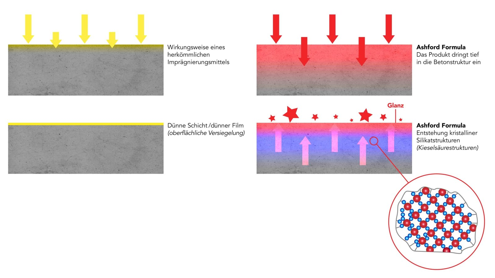
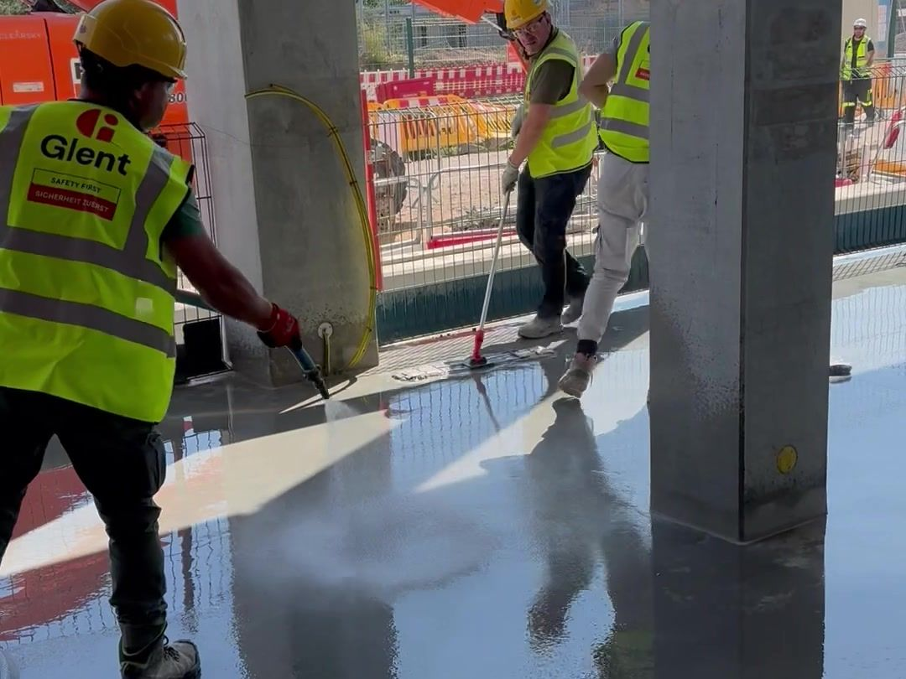
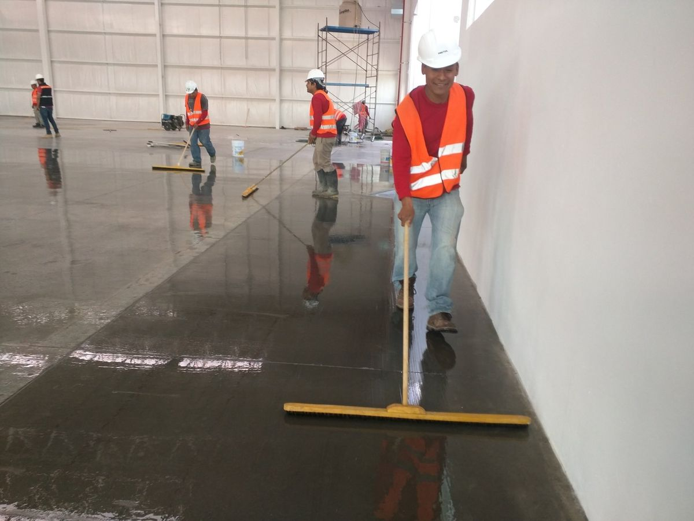
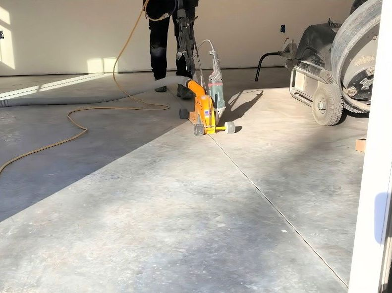
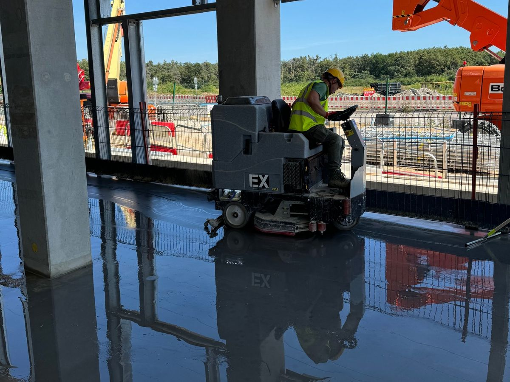
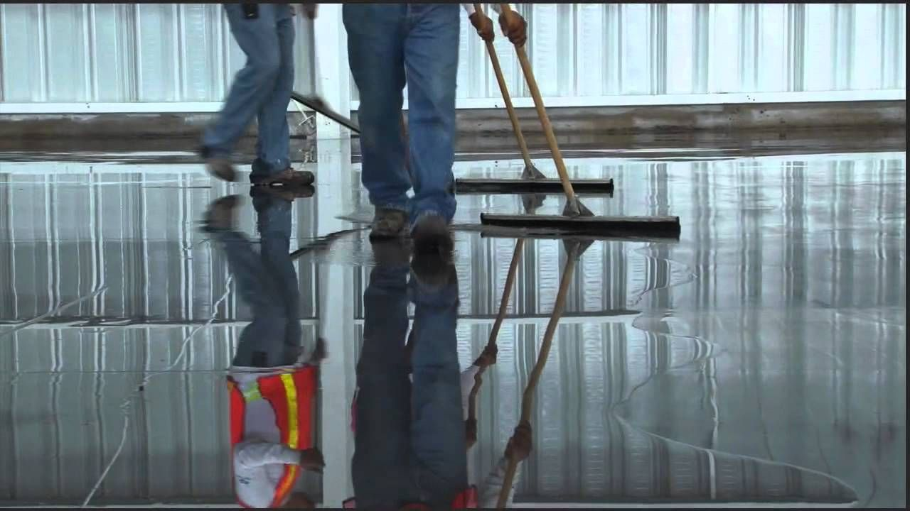
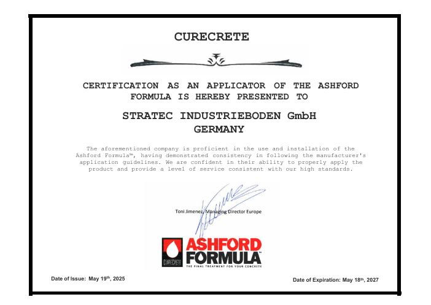

Anwendung
Ashford Formula wird einmal aufgebracht und wirkt danach im Material selbst, im Neubau wie auf bestehenden Böden. So läuft es ab, vom ersten Sprühstoß bis zur Pflege im Alltag.
- ZeitpunktZwischen Glätten und Fugenschnitt
- MengeCa. 150 bis 250 g pro m², je nach Untergrund
- AufwandLäuft im normalen Bauablauf mit
Was im Beton passiert
Frischer Beton ist voller winziger Hohlräume. Dort sammeln sich Wasser und Schmutz, und an der Oberfläche löst sich nach und nach feiner Staub.
Ashford Formula reagiert mit dem Calciumhydroxid im Beton und bildet feste Kristalle genau an diesen Stellen. Die oberste Schicht wird dicht und hart.
- Der Beton bleibt diffusionsoffen.
- Keine Schicht, die sich ablösen oder abplatzen kann.
- Mit der Nutzung wird die Oberfläche dichter und bekommt Glanz.

Der Ablauf auf der Baustelle
Im Neubau sind es vier Arbeitsschritte, die direkt an das Glätten des Betons anschließen. Entscheidend sind der richtige Zeitpunkt und eine gleichmäßige Menge.

Aufsprühen
Sobald der Beton geglättet ist, wird Ashford Formula gleichmäßig aufgesprüht, bis die Fläche gesättigt ist. Die Menge wird dabei genau gemessen, je nach Saugfähigkeit des Untergrunds rund 150 bis 250 g pro m².

Verteilen
Mit breiten, weichen Besen wird das Material über die ganze Fläche verteilt, damit jede Stelle genug aufnimmt. Jetzt beginnt die Reaktion im Beton.

Fugen schneiden
Beim Fugenschnitt wird der entstehende Schlamm direkt abgesaugt. So bleiben die Fugen sauber und lassen sich später gut verfüllen, zum Beispiel mit CreteFill.

Reinigen und übergeben
Zum Abschluss wird die gesamte Fläche maschinell gereinigt. Danach ist der Boden fertig und kann genutzt werden.

So läuft die Zusammenarbeit
Ashford Formula gibt es nicht im freien Handel. Damit das Ergebnis stimmt, setzt ein geschulter und zertifizierter Fachbetrieb jedes Projekt um.
Anfrage stellen
Sie schildern kurz Objekt, Fläche und den geplanten Zeitraum.
Beratung und Angebot
Wir klären die Details und stimmen den Termin im Bauablauf ab.
Ausführung
Unser zertifizierter Partner bringt Ashford Formula fachgerecht auf.
Garantie
Auf Wunsch erhalten Sie eine Garantieerklärung über 20 Jahre.
Ausführung durch Stratec Industrieboden
In Deutschland übernimmt die Stratec Industrieboden GmbH die Anwendung von Ashford Formula. Das Team ist von Curecrete geschult und zertifiziert. Zeitpunkt, Menge und Verarbeitung stimmen, und nur so ist die Garantie über 20 Jahre möglich.

Nach der Übergabe
Ein behandelter Boden braucht wenig Pflege. Mit der richtigen Reinigung bleibt er dicht, sauber und bekommt mit der Zeit einen leichten Glanz.
- Regelmäßig Staub und Schmutz entfernen, damit nichts auf der Oberfläche schleift.
- Mit einem auf Beton abgestimmten Reiniger wischen oder maschinell reinigen.
- Keine sauren Reiniger verwenden, sie greifen die Oberfläche an.

CreteClean Plus
Der Reiniger von Curecrete für verdichtete und polierte Betonböden. Für Wischmopp und Scheuersaugmaschine, empfohlen etwa dreimal pro Woche.
Zum ProduktPolierte Optik gewünscht?
Ashford Formula verdichtet die Oberfläche und erhält ihre Optik. Wer einen glänzenden, polierten Boden möchte, neu oder bestehend, greift zu RetroPlate.
Ihr Projekt steht an?
Schildern Sie uns Objekt, Fläche und Zeitraum. Wir stimmen den Termin mit dem Fachbetrieb ab.